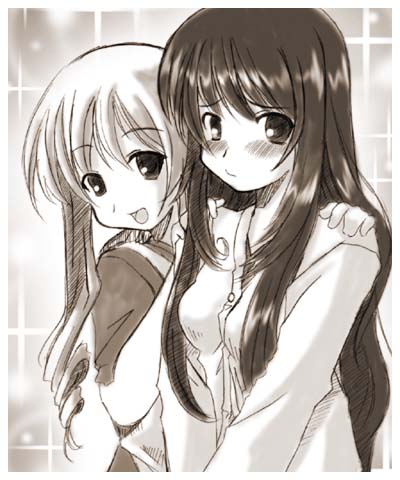
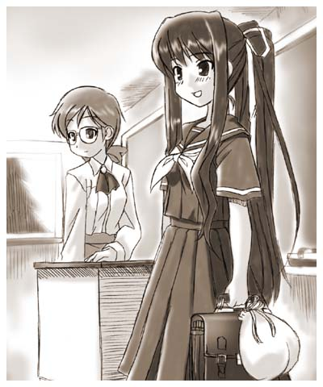
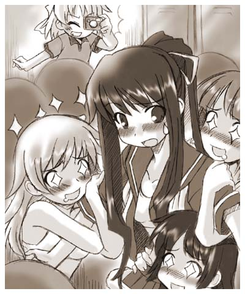
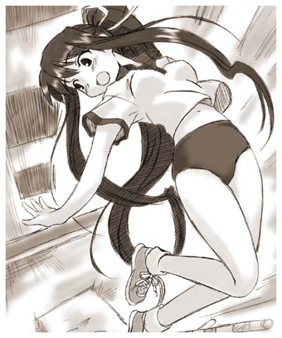
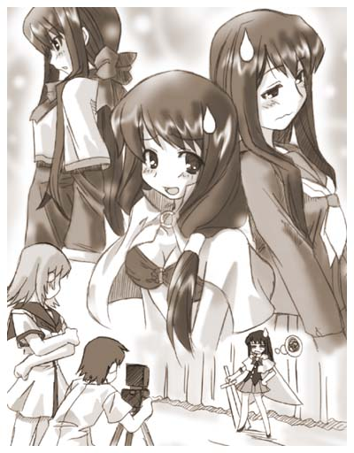
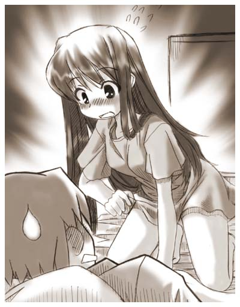
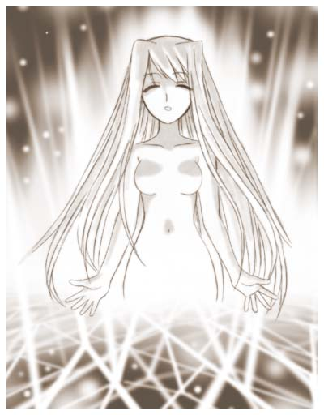
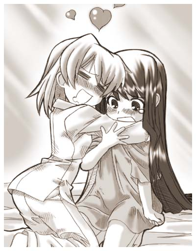

■登場人物紹介
佐倉 伊織（さくら いおり）
神様が依り付いてしまった為に女になってしまった一応不幸な主人公。
本人は文句を言いつつもしばらくの間女として生活する事には納得している。
裕香の作戦が利いているのか少しづつ神格がアップしている模様。
天城 裕香（あまぎ ゆうか）
伊織の幼馴染。トラブルメーカーであちこちから厄介ごとを持ってくる。
しかし、その行動力と顔の広さは侮れない。人を縛る技術は神業。
沖田 誠二（おきた せいじ）
伊織の幼馴染。悪人顔だが一番の常識人、溜め込んだ雑学で色々助言をしてくれる。
伊織からの信頼も厚い。しかしその穏やかな性格が仇となって黙っているととても影が薄くなってしまう。
巳嶋 小夜（みしま さよ）
安曇神社の神主の娘。伊織に取り付いた神「あずさ様」と面識がある。
コックリさんで神様と会話する事が出来る。
佐倉 香苗（さくら かなえ）
伊織の母。突然息子が女になってもまったく動揺せず、おもちゃにするＴＳ物特有の母親。
現在着々と息子を娘に改造中。
第二話 前編
「あんた誰?」
玄関まで出迎えた俺を見た、愛すべき幼馴染「天城裕香(あまぎ ゆうか)」が始めに言った言葉がこれだった。
「…………はぁ」
俺は思わずため息をついてしまった。 女になってからという物、知り合いと会う度にこれと同じ反応を繰り返されてきたのだ。そりゃ、いい加減うんざりしてしてくると言うものだ。
それにこいつは昼間、俺とずっと一緒にいたっていうのに判らないとは。幼馴染として悲しいやら情けないやら。
「なっ、なにため息なんかついてんのよ！ あんた伊織の何なの！？」
「…………。俺だよ……」
「は？」
「俺だ、伊織だよ。昼間散々見ただろ…」
「…う、嘘…」
裕香が息を呑む。
今の俺は薄いグリーンのワンピースに白いカーディガンを羽織り、髪は下ろして少しウェーブをかけて、顔にはご丁寧に化粧までしてある。
まあ、初見でわかれって言うほうが無理なのかも知れないけどさ……。
ついでに言えば、イメージは避暑地のお嬢様だそうだ。目が死んだ魚の様になっているが気にするな。
「この格好か? 母さんに着せられたんだよ。うー、息子を散々おもちゃにしやがって……」
あの玄関でのカミングアウトの後、俺はすっかり母さんの着せ替え人形となっていた。誠二まで連れ込んで俺に服をとっかえひっかえさせて、ファッションショーじみた事をやらせて、ヤンヤヤンヤと喜んでいた。
いいかげんうんざりしていた俺は、来客にかこつけてに玄関まで逃げてきたのだ。
「あ……あははは。冗談よ! 判ってて知らない振りしただけだよ〜。
それにしても可愛くなったわね伊織、昼間と印象がまるっきり違うから誰だか判らなかったよ〜」
あきらかに動揺しつつ裕香が弁解する。
おいおい。前半と後半で言っている事がまったく違うぞ。
俺が裕香になんか一言ってやろうかと思案している時、リビングから母さんが様子を見に出て来た。
「伊織ー、誰だったの?」
むっ、まずい事になるかもしれない。母さんと裕香は仲が良い、特に俺をいじる時のそれはもう信じられないようなコンビネーションを発揮する。
「あら〜、裕香ちゃんいらっしゃい♪」
「香苗さん、こんばんわ〜」
判っているとは思うけど香苗は母さんの名前だ、母さんは「おばさん」と呼ばれるのが嫌で誠二と裕香には名前で呼ばせているのだ。
「どお? 伊織可愛くなったでしょう?」
母さんは自慢の人形を見せびらかすような感じで俺の両肩に手を置いた。

次の日、いつもより少し早めに登校した俺は職員室を目指していた。
昨夜、担任の幹島先生から連絡があったからだ。
生活指導の荻島先生に話したものの信じてもらえず、結局当の本人である俺を交えてもう一度相談するという事になった。
まあ、無理もないと思う。あまりに荒唐無稽な話だから実物を目にしないと信じられないだろう、いや実物を見ても信じられないかもしれないけど……。
それにしても、さっきから周りの視線が痛い―――――。
廊下を歩く俺は目立っていた、この制服のせいなのだろうが、普段こんな風に注目された事のない俺は萎縮してしまう。
これからこういうのが続くのかと思うといささかげんなりするな。
「失礼しまーす」
恒例の挨拶をして職員室に入った俺はズカズカ大またで幹島先生の机を目指した。もちろんここでも他の先生方の注目を集めている。
幹島先生は自分の机で何かの書類と睨めっこをしていた。
「先生。昨日言われた通りに来ましたよ」
「ああ。佐倉君待っていたのよ……って、ええっ！？」
幹島先生は書類から目をはなして俺の顔を見たとたんに驚きの声をあげた。
「……え？ 本当…に佐倉君？」
「まあ、そうですよ―――――はぁ」
またこの反応かと思った俺は、またため息を付いてしまった。ほとんど条件反射になってしまっているな。
「あ、ごめんなさいね。髪型と服の所為かしら……ずいぶん昨日と印象が違って見えたから……」
まあ人間、髪型と服だけでずいぶんと印象が変わるというのは昨日鏡を見ながら実感したからなあ。
裕香の言う通りこの制服は今の姿の俺によく似合っていた。鏡の前で思わず自分の姿に見惚れてしまうなんて稀有な経験もしてしまったしな。
「この服知り合いのお古なんですけど大丈夫ですかね？」
「そうね、しばらくの間だし大丈夫ではないかしら。とても良く似合っているしね」
先生はくすりと笑って意味ありげな顔をした。
「しばらくの間面倒かけると思いますけど宜しくお願いします」
「ええ、かわいい子のお願いだもの先生張り切っちゃう」
「は…はあ」
「えーと…佐倉君は確か沖田君と仲良いのよね？」
「はい、そうですけど」
裕香とも仲良いけどね。
「うーん、沖×佐かしら…。でも沖田君顔の割には真面目だから佐×沖の方が良いわね……いいかも。夏はこれで行こうかしら」
先生は何かブツブツと意味不明な事を言っている。
「先生？」
「えっ！ あ、ああ。なんでもないわ、なんでもないのよ〜」
「はあ」
あはは…と誤魔化し笑いをする先生。なんだかブツブツ言っていた時の顔が裕香の企んでいる時の顔に似ていたのは気のせいなんだろうか。
「さて、ホームルームが始まる前に荻下先生のとこに行きましょ」
生活指導室で荻下先生と対面した。ガッチリした体躯のベテラン刑事と言う印象の先生だ。
この先生は俺たちと同時にこの学校に赴任してきた先生なんだが、なにを隠そうその前は俺達の中学校の先生をしていたのだ。
実は中学校時代、俺達３人はこの先生に良くお世話になっていた。もちろん悪い意味でだが。
中学生の時から裕香はいろいろやらかしていて、誠二と俺はそのとばっちりで良くこの先生に絞られているのだ。
別に悪い先生でもないし、仲も悪くもないのだが。そういう経緯からか俺たちは目を付けられていた。
「幹島先生は君が佐倉伊織だと言っているがそれは本当か？」
「そうです、間違いないですよ。なんなら古文の茂山先生に聞いてみては？ 俺がこの体になった時授業をしてましたし」
「確かに茂山先生からもそういう報告を受けているが……天城達と一緒になって何かやらかそうって言うんじゃないのか？」
「やだなー、違いますよ。まあ、先生が疑うのも無理はないと思うけど……」
今まで俺たちがやらかした問題の数々を思えばね、とは言えやったのはほとんど裕香だけど。
「どうも信じられん……」
「荻下先生、先生と佐倉君しか知らない事を質問してみては？」
幹島先生が提案した。
「まあ、それがいいでしょうな。」
俺はは荻下先生から出されたの幾つかの質問に答えた。大半が俺たちがやらかした事に関する問題だったのでちょっと申し訳ない気持ちになってしまった。
「ふーむ、確かに佐倉のようだな」
「やっと判ってくれました？ これで駄目だと先生の車のダッシュボードに入っている写真の事を話すしかなくなる所でしたよ〜」
これは俺が知ってる荻下先生の秘密で信じて貰えなかった時の切り札だ、実際の所たいした事ではない先生の愛娘の写真が入った何冊ものアルバムが入れてあるだけだ。別にそんな隠すまでの事ではないと思うのだが本人は秘密にしたいらしい。
ま、生活指導の先生って威厳が必要らしいからね。
「写真って？」
不思議そうに幹島先生が聞く。
「さっ…佐倉っ！」
「いえいえ、なんでもありませんよー。男同士の約束の話ですから。これで信じて貰えたと思いますし」
「判った判った。まったく、お前というやつは女になっても変わらんな」
先生は苦虫をつぶした様な顔をして嫌味をいった。
「あはは…。外見が変わっても本質はなかなか変わらない物ですよ。」
「？」
幹島先生は最後まで訳が判らないと言う顔をしていた。
「ははは…。そうか安曇神社のあずさ様の所為か」
一通り事の経緯を聞いた荻下先生は納得したように笑った。
「先生はあずさ様の事知ってるんですか？」
「まあ、俺は地元だからな。安曇神社の噂は色々聞いてるし、実際にやられた人も見ているのでな」
「へえー。そうなんだ」
そういえば小夜ちゃんもあずさ様は地元では有名って言っていたな。
「それで佐倉君の対処はどうしましょう？」
幹島先生が質問した。
「男に戻るまでは女生徒扱いするしかないでしょう。制服は、まあ一時の事だからその格好で良いとしましょう、一応は本校の制服でもありますし」
「よかったね佐倉君」
「心中複雑ではありますけどね」
「トイレと着替えは緊急の時以外は職員室の横を使っていいぞ、校長と教頭には俺から報告しておく。
あんまり問題を起こすんじゃないぞ」
「努力はしてみますよ」
「ま、何かあったら幹島先生か俺の所に言いに来い」
「はーい」
取りあえず始めの関門はクリアした様だ。とは言え、正直な所こっちでの話し合いはあまり心配していなかった。
次のクラスデビューの方が問題がありそうだ。なんせ人数が多いし、どう扱われるか判った物じゃないからな。
生活指導室を出た俺はご機嫌な幹島先生の後をとぼとぼと歩いて教室へ向かった。
「昨日起こった事は皆も知っていると思うけど、佐倉君が女の子になってしまいました」
どよめく教室内、あちこちから「おおー」とか「きゃー」とか聞こえてくる。
現在俺は教室の外で先生から呼ばれるのを待っている状態だ。混乱を防ぐためまず先生が大体の事を説明してくれる。
安曇神社とあずさ様の事は出来るだけ伏せてもらうように頼んでおいた。変な噂になってしまったら小夜ちゃんに迷惑が掛かってしまうからな。
幹島先生はこれからの俺の待遇と女性化が一過性物であり何いずれ元に戻るという事を説明した。
先生が元に戻るって言った時に周りから落胆の声がしたのは聞かなかった事にしておこう。
「それじゃ、佐倉君。入ってきて」
先生が俺をご指名だ。緊張で心臓が激しく動悸し足がガクガク震えたが、それを気合で押し殺しながら「はい」と女になって高くなった声で返事して教室に入った。
周りの息を呑む気配を感じつつ俺は先生の隣に立った。
「え、えーと。」
昨日までの見知った顔が、皆こっちを注目しつつ驚いた顔になっている。
その様子を見て、公園の池にいる鯉を連想してしまい顔が少し緩んでしまった。しかしそのおかげで少し緊張がほぐれた様だ。


「えへ…えへへへへへ……。たくさんの肌色が〜、柔らかいものが〜、えへへ……」
数分後俺は訳の判らない事を呟きながら裕香に手を引かれて歩いていた。
「こらっ伊織！シャッキリしなさいっ」
裕香が俺の背中に回し蹴りを叩き込んだ。
「げぶっ！！…………………はっ！ あ、あれ？ 裕香？」
「ようやく正気に戻ったみたいね」
「あ、ああ。 ん？ いつの間に俺は校庭に来たんだ？」
見ると周りにはうちのクラスの女子が集まって先生が来るのをお喋りしながら待ってる状態だった。
「私が引っ張ってきてあげたんだから。感謝してよね」
「でも、俺いつ着替えたんだ？ ちょっと前の記憶がなんかあやふやなんだよな…」
「そんな事より伊織、その体操着はどう？」
裕香がニヤニヤしながら聞いてくる。
「どうって。普通の体操着なんじゃ……ってええっ！？」
俺が着ている体操着も制服と同じように前のものなのでデザインが違う。
特に下。周りの女子が着ている者は短パンだが、俺が履いているこれは…。
「ブルマ！？」
そう、俺が履いているのは今や絶滅の危機にある小豆色のブルマだった。
「そうだよー。よっく似合ってるね」
「ジャージ着て来る」
踵を返して校舎に戻ろうとする俺。しかし裕香がガッチリと腰にしがみ付いて止める。
「駄目だよ。もう先生来るし」
「遅刻してもいい！ こんな恥ずかしい格好でいるくらいならマラソンした方がマシだ」
体育の時間に遅刻したらマラソンさせられるのはこの学校の伝統らしい。
「駄目駄目！ ブルマは”いおりんアイドル化計画”に必要なんだからっ！」
「はあ？」
「いい？ 伊織。実はブルマフェチっていう人自体はあまり数は多くないんだけどね。
短パンとブルマどっちが良いかって言われたら、ブルマを選ぶ人のほうが圧倒的に多いんだよっ！」
「？」
「つまり、日本男児は基本的にはブルマ好きなの！ かく言う伊織も短パンよりもブルマでしょ！！」
「えっ？ まあ確かに…」
確かに短パンよりもブルマの方がいい。俺はシャツの裾は外に出すほうが好きだな……。
「という訳で、伊織の人気を上げる為にはそのブルマが必要なの。分かった？」
「いや、でもさ……」
「でももヘチマもないの！ もとに戻る為でしょ！」
「うう…。分ったよ」
なんだか裕香の尋常ならない勢いに乗せられてしまった様な気もする。
よく見ると向こうにいる男子がこっちをじろじろ見ていた。
凄く恥ずかしい。
思わずシャツの裾でブルマを隠したくなってしまったが、それも男子を喜ばせるだけだと思い踏み留まった。
そうこうしているうちに先生が来たので列に並ぶ。出来るだけブルマの事は考えないようにした。
「今日の授業は走り高跳びをやるぞー」
体育の池上先生が声を張り上げる。豪快な女の先生だ。
なんで女性の体育教師って、口調が男っぽい人が多いんだろう……。
「佐倉ー！」
「はい！」
「おお〜。ホントに可愛いな。ブルマ姿も良く似合っているぞ」
「は？」
「いやスマンスマン。佐倉お前は一昨日までは男子だったんだろう？」
「ええ。そうですけど」
「男子はもう高飛びやってたよな？」
「ええ。先週やりましたけど」
「じゃあ、佐倉。皆に手本を見せてやってくれ」
「ええ！？」
「そんなに高く飛ぶ必要はないから安心しろ」
「…はい」
何故か歓声があがる。
確かに前授業でやってはいたけどお手本になるほど上手い飛び方は出来ないと思うけどな。
ま、教わった通りに飛べば良いんだろうけどね。
「それじゃ、いきます」
位置に付いた俺は先生に向かい右手を上げて宣言した。
「おう」
幸い棒の高さは授業でやった物より低かったのでまあ多分大丈夫だろう。
取り合えず肩の力を抜いて授業で教わった通りに背面飛びで飛んでみた。
男の時よりも綺麗なフォームで飛べたと思う。
ボスンとマットレスに落ちた俺は皆の反応をうかがった。
反応なし。と言うか皆驚いた顔をしている。
なんか拙かったのかな…。
「さ…佐倉」
「はい」
「もう一度飛んでみてくれ、今度は棒の高さは意識せず出来るだけ高く飛んでみてくれ」
「は？ はあ」
釈然としないままもう一度今度は出来るだけ高く飛ぶ事を意識してみた。
走っている時なんとなく違和感を感じたが、そう思った時にはもう地面を蹴って飛んでいた。空高く。

放課後。長かった授業も終わり周りが部活や帰宅の支度で騒がしくなった頃。
おれは誠二の前の席に座って体育の時間に起きた出来事を話していた。
「む、高飛びで６メートル以上も飛んだと？」
「ああ、やっぱりアレかな。あずさ様のせいかな？」
俺は周りに聞こえない様に声を潜めて言った。
少し考えた後に誠二はゆっくりと喋った。
「そうだろうな。それに今日学校に来た事で、状況が変わったのかもしれない」
「昨日と今日で何か違うのか？」
「今日、伊織はどのくらい目立っていると自分で思う？」
「まあ、かなり目立っているんじゃないかな。話題性もあるし制服も皆とは違うものだし」
「今、伊織に対しての周りの認知度が昨日とは比べ物にならないほど上がっている。
つまり、それに応じてお前の力も上がっているのではないか？」
「あー、なるほど。つまり神格があがったんだ」
以外にも裕香の作戦はうまく働いている訳か。少し癪だが一応感謝しておこう。心の中でな。
「まあ、俺の推理でしかないがな。しかし……」
「ん、どうした？」
「いや、昨日から色々考えているんだが、腑に落ちない事が多くてな」
「は、何が？」
「伊織が女になる事の必然性だ。神様が人を依代にした例は結構あるのだが姿が変わったという例はあまり聞いた事がない。
それに伊織を選んだ理由もいまだ疑問が残る」
「俺を選んだ理由なら、昨日あずさ様言っていなかったか？」
「確かに伊織には貸しがあるという話だったが、それだけでは説得力に乏しいと思わないか？」
「何が？」
「わざわざ伊織から取り立てなくても、他にもっと依代に適した人もいた筈だ。何より伊織は霊格もかなり低いという話だからな」
「霊格低くて悪かったな」
「拗ねるな。俺が予想するに、恐らく他に伊織じゃなくてはならない理由があったのではないかと思う」
「その理由って？」
俺は前のめりになって次の言葉に耳を傾けた。
「さっぱり判らない」
「なんだよ〜」
俺はガックリと誠二の机に突っ伏した。
「まあ、その内に明らかになるだろう。本当にただあずさ様が伊織を気に入っただけかもしれない」
「本当にそれだけかもな」
「だが、あまりに筋の通らない事が多い。一応慎重に行動した方がよさそうだ」
「慎重にね〜、何が危険なのかも判らんからどうしようもないぞ」
「まあ、そうだな」
誠二とそんな事を話していると、裕香が俺達の所にやって来る。
「伊織ー。明日の放課後空けておいてね」
「ん、何をするんだ？」
「明日は土曜で午前中で授業は終わりでしょ。だから明日から”いおりんのドキドキ信仰心アップ計画”を始めるのよ」
「何だそれは？」
なんか計画の名前が聞く度に変わっていないか？ しかもどんどん大仰なものになってるし。
「伊織の人気を上げるための活動に決まってるでしょ」
「まあ、そうだったな」
あずさ様が裕香に任せたんだっけ。
でも正直人選ミスだと思いますよあずさ様。裕香にこう言った事をやらせると碌な事にならない。
第二話 後編
次の日。俺と裕香と誠二の３人は午前の授業を終えた後集合した。
「今回のなんとか計画は具体的に何をするんだ？」
昨日詳しい事を聞けなかったので、裕香に聞いてみる。
「”いおりんドキドキハイスクール関東制圧計画”だよ。今回は助っ人を呼んであるから」
裕香が手帳をパラパラ捲りながら言った。
「助っ人？」
「そう、写真部と服飾部、それからコンピュータ研究部が協力してくれる事になっているから」
「なんか色々と手をまわしているな」
何をやろうとしているのか、なんとなく分かる布陣だ。
「ま、私の顔の広さを使えばこの位どおってことないからね。それから新聞部がインタビューさせてくれって言ってたよ」
「ええっ！ それはちょっと嫌だな……」
「何言ってるの。ありがたい事でしょ勝手に記事にしてくれるって言うんだから」
「そうなんだけどさ……。なんか変な騒ぎになりそうでな」
「じゃあ、断る？」
「いや、受けるけど……」
俺は正直嘘が得意ではない、根掘り葉掘り聞かれて上手く安曇神社やあずさ様の事を隠しておける自信がないのだ。
しかし、新聞部で俺の事を広めてもらえれば人に何回も説明しないですむし、変な噂も流れにくいとは思う。
「まあ、取り合えず先に今日の方を片付けよう。せっかく裕香がお膳立てしてくれたんだ、さっさと行こうぜ」
「えっと。第二会議室に集まってもらう事になってるから」
「第二？ では、部室棟だな…」
俺達三人は第二会議室のある部室棟へ向かった。
この学校の設備は古いものが多いが、敷地や建物は異常なほど広くて多い。
だからほとんどの部活は専用の部室がある。
部室棟と呼ばれる建物は基本的に文化部の部室が集まった建物で第二会議室はもっぱら部活同士の話会いの場所として用いられる。
ちなみに運動部の部室は校庭の近くの専用の建物を使っているが会議はこっちを使う。
はあちこちタイルがはがれてコンクリートが剥き出しになっている廊下を進み。
１階の端、第二会議室とパネルが張ってある教室に入った。
部屋普通の教室よりも広くは窓に黒い暗幕が掛かっていて薄暗い感じがする。
人数は１０人くらいの人間がそれぞれの部の機材などを忙しくいじっていた。
恐らく各部員が３人づつくらい来ているのだろう。
「失礼しまーす、連れて来ましたよ」
「いやー。待っていたよ」
写真部の部長らしい人が俺達を迎えてくれた。俺の予想とは違い軽い感じのイケメン風な先輩だった。
裕香の話では写真部が中心になって協力してくれるらしい。
「えっと、今日は宜しくお願いします」
取りあえず、俺は礼儀正しく挨拶した。
「おお！ 素晴らしい。君が佐倉君だね。昨日天城さんから写真をもらった時も美人だと思ったが、実物はそれ以上に美しい〜」
そう言うと写真部の部長は芝居がかった仕草で俺の手を握ってきた、両手で。
俺の背中に怖気が走る。
男なんぞにこんな風に手を握られるのは気持ちの良いもんじゃない。
「は、はあ」
俺は身体を後ろに反らしつつ、なんとか返事をする。
「ちょっと、何気にセクハラしてんじゃないわよ！」
恐らく３年生だろう、少し大人びた印象の綺麗な女の人だった。恐らく服飾部の部長はこの人なんだろうな。
その人は写真部部長の腕を払って、俺の手を引いて部長から引き剥がしてくれた。
「酷いな、僕は親睦を深めようと思っただけなのに」
「フンッ！ あんたの様なセクハラ魔神に触られたら伊織君が穢れてしまうわ」
「はじめまして、伊織君。私は服飾部の部長、綾瀬春香よ」
「は、はい。宜しくお願いします……」
「私は貴方の衣装を担当するわ、可愛い服をたくさん着せてあげるわね」
そう言うと俺を引き寄せて、抱きしめた。うわあー。
俺は鼻孔をくすぐる甘い匂いと柔らかい感触に思わず赤面してしまった。
「君のもセクハラではないのかね？」
「いいえ、私のは純粋に美を愛する心よっ！」
先輩はギュウと抱く力を強めた。胸が当たっていますよ胸が。
「むう、君がそういう事をしているのを見ると少々うらやましくなるな」
どっちにですか。先輩？
「うふふ。同性ならこの位のスキンシップ普通だものね」
いえいえ先輩、俺は男ですよ。現状での体は女になってますが。
「先輩方、伊織をからかうのはそのくらいにして下さい、そろそろ始めたいんで」
この騒ぎを止めたのは引きつった笑顔をした裕香だった。
手には荒縄を持っておりそれを裕香が捻る度にギリギリを音を立てている。
裕香の縄の威力を知ってか、それとも顔の迫力のせいなのかは判らないが、先輩達はそそくさと自分の持ち場に戻っていった。
「伊織もデレデレしてないで、ちょっとコッチ来て」
「あ、ああ」
裕香は俺を部屋の隅の方へ連れて行く。
そこには長机が置いてあり、そこにノートパソコンを置いて操作している男子生徒が一人いた。
痩せていて眼鏡をかけている、いかにもパソコン少年という感じの風体だが目付きは結構鋭い印象があった。
俺達が近づいたのに気づいたのかその生徒は顔をあげて「やあ」と言った。
「どうもー」
「はじめまして」
こっちでも一応挨拶しておく。俺の為に集まってくれた訳だから礼儀正しくしないとな。
「どうも、ＰＣ研の部長の尾張だ」
ＰＣ研の部長は俺の顔をまじまじと見た。
「ふむ、初めて会った気がしないな。ま、それもこんな物を作ったからなんだけどな」
そういっつつニヤリと笑うと尾張先輩はノートパソコンをぐるりとまわして、液晶画面がこっちに見えるようにした。
「な、なんだこれは！」
そこに映っていたのはあるホームページだった。
しかしタイトルには馴染み深い名前がでかい装飾されたフォントで表示されていた。
―――――― ネットの神様 いおりん オフィシャルホームページ
スクロールしてみるとギャラリーや日記、掲示板などが作られていた。
ギャラリーは俺の写真が数多く展示されていた。恐らく昨日家で裕香が撮っていたものだろう。
正直、今日ここへ来る前にある程度予想はしていたんだが、ここまでストレートな物を作っているとは思わなかった。
「あ、ちなみにもう公開してあるから」
裕香がしれっとそんな事を言った。
「何っ！ 俺の断りもなしにかよ」
「あずさ様が直々に私に任すって言われたんだからいいじゃない。それに伊織を有名にするにはこの位必要でしょ」
「ま、まあそうだけどさ。”ネットの神様”はないんじゃないか？」
ネタ的にも旬は過ぎている様な気がするし……。
「う。まあ、私もそう思ったんだけどね」
「じゃあ何で？」
「だって、伊織の写真まともに写らないんだもん」
「は？」
俺は改めて自分の写真を見てみた、サムネールをクリックして大きい写真に切り替える。
確かにどの写真にも黄色や白の靄の様な光が入ってしまっている。
「何これ？」
「たぶんオーラじゃないの？ 心霊写真とかでこんなの見たことあるし」
そういえば、ＴＶなんかの心霊番組で見た事がある、霊能者の人が色に意味があって赤いのは危険とかそれっぽい解説をしていた様な気がする。
「尾張先輩に相談しても消せないって言うから、まあ神様って事にしておけばみんな特殊効果って事で納得するかなって」
「消せないんですか」
俺は今までずっと黙っていたＰＣ研部長に聞いてみた。
「少なくとも僕には無理だね。この手の物を消すのは難しい」
「そうですか……」
それにしても、以外に色々凝った作りになっているな。
考えてみれば昨日の今日でここまでの物を公開までこぎつけるのは大変だったろう。感謝こそすれ文句を言うのは筋が違うよな。
「まあそうだな、せっかく裕香が俺の為に作ってくれたんだし。ここは素直に感謝しておくよ。ありがとな裕香」
「えへへ……。そんな風に素直に感謝してもらうと困っちゃうな」
「なんで？」
「これからいおりんには恥ずかしい思いを沢山してもらうからね」
「何？ 普通に写真撮影するんじゃないのか？」
「もちろん、普通の写真じゃ人気集まらないからね」
「うう……。感謝なんてするんじゃなかった」
「それでは先輩方。撮影をはじめましょー！」
裕香が高らかに宣言し。撮影がはじまった。
裕香の言う所の普通じゃない写真とはいわゆるコスプレ写真だった。
ナースとかスチュワーデスとかではなくアニメやゲームのキャラクターの方だ。
この写真をさっきのホームページに展示して俺の認知度を上げようと言う物だった。
しかし、ホントにそんな事で人気が上がるのかな、クラスの奴が作ったＨＰなんてずっと３桁をキープしているって言うのに。
聞くところによると服飾部が普段作っている物は言わばカモフラージュでこっちの方が本職らしい。
それにしても今俺が着ているものはえらい布が少ない、基本はメイド服なんだろうがスカートは短いし背中は開いているし、気分的には下着姿でいるようなものだった。
しかも、この撮影会はこっちが頼んでやってもらっている事なので嫌などとはとても言えない。
俺は写真部の部長の言うとおりに白い幕の前でぎこちなくポーズをとっていた。
皆の見守る中、問題なく撮影が進んでいると思ったが、数枚撮った所でカメラから目を離した部長がこう言った。
「うーん。恥らう顔も良いんだけど。ちょっと硬いな…………」
まあそうだろうな、こっちは昨日女の身体になったばかりでそれだけでも恥ずかしいのに。
この身体を覆う面積の少ない服を着せられているのだ。緊張しない方がどうかしている。
「僕が思うに佐倉君。君の頭の中ではまだ男なのではないかな？」
部長の顔はさっきの気障な印象とは違い真剣に取り組んでいる様に見える。
「え？まあそうですけど」
そりゃ、俺が自分を男だと思うのは当然だと思うけど。
「いや、僕が言っているのはアイデンティティーの話ではなく、つまり男の姿で女性の服を着ているような気持ちになっていないかいって事だ」
「あ…」
確かにそうだ、なんとなく変わってしまった自分を見るのが嫌で鏡なんかもあんまり見てないし。
着替えやトイレなど性別を意識する状況以外ではなんとなく頭の中の自分は男のままだった。
「なるほど、じゃあ話は簡単ね。今の伊織君の姿を本人に鏡で確認してもらってから撮影してもらえばいいんじゃない」
綾瀬先輩の提案で大きな姿見が用意され、自分の姿を嫌と言うほど見せられた。
おまけにＰＣ研の尾張先輩のアイディアでデジカメに写している画像を大型液晶モニターに表示しているので、撮影中も自分の姿を意識しない訳にはいかなかった。
「うんうん、いいね。恥じらいの顔がさっきよりも自然になったよ」
それはそうだろうさっきよりも恥ずかしいからな。
まさかこんな姿の自分をまじまじと見る事になろうとは……。
その後は、なんか剣士や魔術師などの服を着せられたが以外に露出は少ない物が多かったと思う。

家に着いた俺は学校とは違いのんびりと過ごす事が出来る。
母さんは先日のファションショーで満足したのかアレ着ろこれ着ろとは言わなかった。
ただ一つだけ――――。
「母さん、俺の服が一切合財無くなっているんだけど……」
「あら、あるでしょ。部屋のタンスの引き出しに」
「全部女物にすり替わっているんですが……」
引き出しの中に綺麗に並べられたショーツを発見したときには卒倒しそうになったぞ。
「あら、いいじゃない。今は女の子なんだし」
「う〜。家にいる時位は楽な格好をしたい」
「駄目、女の子は普段からキチンとしていないと、いざと言う時にボロがでちゃうわよ」
「おれ男だし、今は女だけどいずれ戻るんだし……」
「あきらめなさい。それとも何かしら、母さんの言う事が聞けないのかしら？」
母さんの目がスッと細くなった。ヤバイ。
「……すみませんでした」
「判ればよろしい」
結局、母さんの迫力に押されて渋々同意してしまった。なんで俺の周りには押しの強い女性ばっかりなんだろうな。
仕方なくタンスの中から楽そうな普段着を出して着てみた。ズボンが一つも残ってないのは嫌がらせだよな。
昨日から３回もやったファッションショーのおかげで問題なく着る事が出来た。なんか複雑な心境だ。
着替えた後は適当にゴロゴロしたりゲームしたりして夕飯の時間まで過ごした。
風呂に入って、えらく長くなった髪を洗うのに四苦八苦した。洗い方を教えてもらったは良いが時間がかかる。
男の時では考えられないほど風呂に時間が掛かったので床に入ったのは１０時を過ぎてからだった。
それでもいつもよりは全然早い時間だったが、疲れていたせいかすぐに眠りの世界に入る事が出来た。
―――――平穏が破られたの真夜中だった。
俺を起こす声で目を覚ます、寝が足りない俺の脳みそは上手く動いてくれていない様だ。
「伊織……」
「伊織、いおり！」
「う〜。だ〜れ〜？」
「私だあずさだ。まずい事になった、起きろ。伊織」
「あずさ様ですか〜。……それは大変…ですねぇ〜………ぐぅ」
「起きぬか！伊織！！」
「はいぃー！」
俺は突然の怒鳴り声に飛び起きた、急に起き上がるのは心臓に良くないのに。
「あれ？」
誰もいない、深夜なので物音などほとんどせず、時計の秒針を刻む音が異様に大きく聞こえる。
「私だ、あずさだ。お前の中から語りかけている」
「え、あずさ様？ なんで……」
「そんな事は後だ、今の自分の置かれた状況を把握してみろ」
「はあ…」
そういえば確かにさっきから何か違和感があるな。
明かりが消えて真っ暗な筈なのになんだか明るいし、なんか身体が軽い……。
「……え？」
俺の下にはベッドがあるがそのベッドには誰も寝ていない、当の俺はどこにいるかと思ったら、その上空１メートルほどにいた。
「ええっ！。浮いてる！？」
そう俺は空中にフワフワと浮いていた。どうした事だ？ なぜ俺の部屋が突然無重力に！？
もしかして今現在、家ごと自由落下中なのか？
一応身体の無事を確かめてみる。うん、大丈夫どこも痛くない。
「っていうかなんか光ってるし！」
何か部屋が変に明るいと思ったら俺の身体が発光していたのだった。なにこれ後光？
「ど、どうなっているんだ！？」
「自分がどうなっているか解ったか？」
俺が自分に起こっている異常事態を把握した頃あずさ様が頭の中から声を掛けてきた。
「解るも何も、これはいったい？」
「お前の神格が上がったのだ、異常なくらいな」
「あ、そうなんだ」
俺は安堵した。
俺達が今日一日やっていた事は無駄じゃなかったんだな。
いやー、よかったよかった。
「良くはないぞ」
「は？」
「このままでは、お前の自我は集まった力に飲み込まれてしまうやもしれん」
「あ…あずさ様？ なんか凄いヤバそうな事を仰っておりますが……」
ジガが飲み込まれてしまうとかなんとか……。
「まあ、時間もないから簡単に説明してやろう……」
「はあ」
「人間の自我をコップ一杯にはいった赤い水だとする」
俺はその様子を頭に思い浮かべた。
「このままでは何も入れることは出来ない、霊媒体質と言う人間はこのコップが人よりも少し大きく、まだ水が入る余裕のある人間の事を言う」
「私は伊織のコップをタライに変えておいた」
頭の中のコップがゴイーンとでかいタライにすり替わった、赤い水は底の方にうっすらと少しだけある。
「言葉どおり器のデカイ男にしてやった訳だが……」
はははと笑いながらとんでもない事をサラリと言うあずさ様。
「って。あんたなんて事してくれるんだっ！」
思わず神様相手に突っ込んでしまった。
「まあ、そうしないと私が入れんのでな」
「自分の為ですか〜」
なんて神様だ、泣きたくなってきたよ。
「そう怒るな。普通に生活する分には問題なかった筈だ」
「まあ。そうですけど……」
「話が逸れたな。今の状況はそのタライの中に無色透明の大量な水が流れ込んでいる状態だ。
少しづつなら透明な水も赤くなっていく筈だったのだが……」
そこであずさ様は少し考えるように言葉を切った。
「今はそれを大きく超える量が流れ込んできている、このままだと赤い水は無色透明の水の中に飲まれて消えてしまう」
「えと……。つまりこのままだと……？」
「確かな事は言えんが、最悪の場合廃人…という事もありえるだろうな」
「ええっ！？ ど、どうすれば…？」
「私には解らん、こんな事は初めてだ。取り合えずその原因を絶つしかないだろう」
「そんな……」
「私は何とか時間を稼ぐ。その間になんとかするのだ」
「ちょっと！ 時間はいつまでですか？」
「朝までになんとかする事だ、それ以降は責任とれんぞ」
「ええ〜！？ 全然時間ないじゃないですか〜！」
「それから私が力を抑えている間は話せないからそのつもりでな」
「ちょっと待ってくださいよっそんな事急に言われても……」
そう抗議したものの、もうあずさ様が返事を返してくる事はなかった。
俺はフワフワ浮きながら、部屋に一人取り残され絶望感に浸った。
「って。浸っている場合じゃないっ！」
数分呆けていた俺だったが自分の状況を思い出し復活した。
何よりも時間がない、どうする？
あずさ様は大量の力が流れ込んで来てるって言ってたよな。
えーと、だから昼間の体育じゃなくてコスプレの撮影写真か？
頭が混乱しているので何がなんだか解らなくなってきた。
どうしよう、誠二に相談するか……？
こんな夜中に押しかけるのも悪いかな……。
いや、こっちは自分の身がかかっているんだ、ここは勘弁してもらうしかない。
よし、誠二の家に行って相談に乗ってもらおう、一人で悩んでいてもしかたがない！
――――と心を決めたとき、俺の周囲の風景がフッと変わった。
「あれ？」
いつも間にか俺は自分の部屋とは違う部屋に来ていた。
いったい何が起きたのかは解らない。この部屋事態は見た事のある風景だった。
俺は空中に浮きながら浮きながら、周囲を観察した。
おそらく男の部屋だろう、綺麗に片付いていて本棚には数多くの専門書と小説が並び、パソコンが一台あってベッドが一つ。
「あ、誠二の部屋か……」
ポンッっと手を打って俺は納得した。
確かに誠二の部屋だ、部屋が薄暗かったし突然の事だったから解らなかったが。
「って。ええ！？」
ついさっきまで自分の部屋にいたのに、今は何百メートルも離れている誠二の部屋にいるなんて……。
「うーむ」
つまり、あれか？ 神格が上がったから瞬間移動とか出来るようになったということなのかな……？
「まあ、今は考えてもしょうがない。取り合えず誠二を叩き起こそう。
俺は誠二の寝ているベッドの上まで移動するとパジャマの襟首を掴んで前後に揺すった。
「起きろ、誠二」
「………」
「起きろって、誠二！」
誠二は以外にもあずさ様が俺を起こした時よりも早く目を覚ました。
「！！！」
誠二は俺を見てかなり動揺しているようだ。
誠二の顔は赤くなった後、青くなりだんだん白くなる。そしてまた赤に戻った。
目が泳いでいるし、凄い汗が吹き出ているのが良く解る。
これは凄い、誠二がこんなに取り乱す所なんて見た事がないぞ。
そんな事を俺が考えていると誠二がなにかブツブツと呟き始めた。
「スマン」とか言っている様だが声が小さくてよく聞こえない。
まあ、今は誠二をからかって遊んでいる時じゃないからな。
「起きたか誠二？」
「？」
「困った事になった。緊急事態なんだ取り合えず起きてくれ」
「ほ、本物……なのか？」
「そうだよ、俺に偽者でもいるのか？」
「なんてことだ……」
誠二は顔を手の平で覆い、大げさに脱力してベッドに沈んだ。
「伊織……」
誠二はそのままの体制でこっちを見ずに言う。
「頼むから、金輪際、今回の様な登場の仕方は止めてくれ」
かなり参った様子で誠二が懇願している。これまた珍しい。
俺が女になってから誠二のクールなイメージが壊れつつあるな。
「はあ？」
「俺の心臓も、昔のように丈夫ではないようだ」
「何を言っているのか解らない」
「自分の来ている服を確認してくれ」
「？」
俺の服？ そりゃ、寝てた所をあずさ様に叩き起こされて、そのままワープして来たんだから……
「うわっ！」
そうか、俺は男の時はＴシャツにトランクスで寝ていたが、母さんに男物はすべて隠されてしまったから今の格好は―――――。

その後、誠二のノートパソコンも使ってあちこちの掲示板に偽情報を書き込んだり、ニュースサイトの管理人に記事の消去をメールで依頼したりしてみたものの、あまり状況が変わったようにはみえなかった。
２時間後。午前４時になろうとしている。もはや状況は悪化する一方になっていた。
下手に消火活動を行ったせいか逆に火に油を注いだ様に書き込みが増えてしまったのだ。
俺に集まる力は増える一方、身体から出るオーラの輝きも電灯がなくても良いぐらいの明るさになっていた。
「……伊織。まだ大丈夫？」
裕香が心配そうに聞いてきた。その声にさっきまでの元気はなかった。
裕香は無駄なくらいの元気が取り柄なのにな………。
「あ、ああ。まだ大丈夫だと思う」
一応平然と答えたもののなんだか意識が朦朧としてきた、これが寝不足なら良いんだが、さっきから体の内側から大きな力が湧き上がってきて、少しでも油断したら成層圏まで吹っ飛んで行きそうだ。
これがあずさ様の言ってた力に飲み込まれるって言う事なのかな。
ただ痛かったり、苦しかったりする事はないので精神的にはまだ余裕がある。
「うう…………ぐすっ。どうしよう？ このままだと伊織が……」
裕香が涙ぐんでおろおろする。
「お、おい泣くなって」
「だって……だって。うわ〜〜〜ん。伊織が死んじゃうよ〜〜〜！」
とうとう裕香が泣き出してしまった、それにしてももう少し色気のある泣き方はできない物だろうか？
こいつももう少し女っぽさがあれば可愛いのに。
いかんいかん、こんな時なのに思考がシリアスになりきれないのは性分なんだろうな。
「泣き止めって。俺が何とかするから」
裕香の頭にポンと手を置いて慰める。
「何とかってどーすんのよ？」
裕香が涙目で聞いてくる。
ちょっと拗ねた感じになっているのは当の本人が余裕あるからかな。
「やるのか？」
誠二は俺が何をするのかわかっているのか俺に確認をするような感じになっていた。
「まあ、やる事はやらないとね」
俺はあっけらかんと答えてやった、俺って昔からピンチの時には大口を叩く癖があるんだよな。
「何？ 何をするの」
あんまりに裕香が心配そうに聞いてくるので、
「そりゃ、俺が奇跡をおこすのさ」
ニヤリと笑って、できるだけしれっと言ってやった――――――――――。
「つまり、現在過剰に集まっている伊織の力を使う」
誠二が裕香に説明する。
「なーる、毒を持って毒を制すのね」
「さて、どうするか？」
大口を叩いたのはいいが具体的な事はまったく考えてなかった。
あずさ様に連絡が取れない現状では俺たちだけで何とかするしかない。
「そうだな……。ネット上にある伊織の画像やデータを神通力で消すのが一番いいのではないかと思う」
「そんな事できるの？」
裕香が疑心暗鬼な感じで聞いてきた。まあ無理も無いな。
「解らない……。ただ、伊織に力が集まっている今なら可能なのではないか？」
うーん、どうだろうか？ さっきワープした時は「行きたい」とか「会いたい」とか思うだけだったんだけど……。
「よく神仏には得意分野があるだろう？学問の神とか豊穣の神とか。
伊織に力が集まっているのはネット上で人気が出たからだ。ならば今の伊織とネットワークは相性がいいのではないかと思う」
「でもさ、具体的にどういう手順でやれば良いのか検討もつかないよ」
「想像でしかないが良く映画やアニメで直接ネットワークの世界に入る物があるな？ あのイメージでやってみてはどうだろう」
「ああ、トロンとかプラモ狂四郎とかのあれか？」
「せめてマトリックスって言いなさいよ」
裕香に常識的な事で突っ込まれてしまった。ちょっとショックだ。
「まあ。だいたい解った、それでやってみる。 誠二パソコン借りるよ壊しちゃったら御免な」
「気にするな。好きに使ってくれ」
「サンキュ」
俺は誠二に礼を言うとパソコンの液晶の前に立った。
精神を集中して、これからやろうとしている事を具体的にイメージする。
俺は瞬間移動の時と同じように意志をネットに繋げる事を念じながら液晶画面に手を伸ばす。
画面に触った。一瞬硬い感触があったそのまま引き込まれるように腕がモニターの中に入った。
そして手が画面に触れた瞬間、俺の意識は液晶モニターからケーブルを通り、グラフィックカード、マザーボードを経由してネットに繋がった。
「お、おお。すげー」
その時、眼下に驚くような世界は広がった。
見渡す限りに淡く光る線が神経の様に縦横無尽に広がっていた。
その線の中を光が凄い速度で行き来しているのが見て取れる、あれがデータのやり取りって事なんだろうな。
俺はその様子を上から見下ろしている、飛んでいるというよりも世界その物になった様な感じだ。
そして自分がこの世界の事を完全に支配できる事を理解した。皮肉な事に本当にネットの神様になった気分だ。
ビジュアル的には真っ裸の様な気もするが気にしないでおこう。
「伊織。大丈夫か？」
すぐ隣で誠二が聞いてきた、今の俺はパソコンのモニターに手を突っ込んでいる本来の自分とネットの中に存在する自分に別れていて少し混乱する。
「あ、ああ。大丈夫だ」
これなら行けそうだ、えっと確か出回った俺の画像の数々を消すんだったっけ。
探す必要もなかった、他のデータよりも判り易い。自分の写真が現在どのマシンにあるのかはっきり判る。
ＨＰを見てくれた人には申し訳ないが消させてもらおう。
「いいか伊織、現在ネットに繋がっていないパソコンや電源の入っていない物のデータも消さなくては駄目だ、少しでも残したらまた同じ事になるぞ、それから時間にも注意してくれ一気にやらないとバックアップをとられる危険がある」
確かに今ネットに繋がっている物だけでは駄目だ、世界にある全てのＰＣから画像を消去しないとまたコピーされて元にもどってしまう。
俺は眼下の世界に眼を向けて電源が落ちているパソコンなどを見てみる。
確かに電源の入っていないＰＣなどが無数に確認できた。
「電源だけの物は何とかなると思うけど、繋がって無い物はどうしよう」
「無線を使って見るのはどうだ？」
「わかったそれでやってみる」
そのＰＣに無線ＬＡＮがついていない場合は無理に繋げるしかないな。
結局の所ネットの世界云々もイメージの問題であって実際はなくても出来る筈。
「よしっ、はじめるぞっ！」
気合を入れて精神を集中させる。

「終わったーっ！」
と言って俺はモニターから腕を引き抜いた。
想像以上に疲れているのかそのままふらふらとよろめいて座り込んでしまった。
最後の最後までなんだか滑稽な自分に苦笑してしまうが、命の危機を乗り越えた達成感が気持ちよく清清しい。
「良かったー。もう一時はどうなっちゃうかと思ったー」
裕香が俺に抱きつきながら安心した様に言った。普段なら振りほどいている所だが今は疲れているし気分も良いのでそのままにしとく。
「伊織、大丈夫か？」
「ああ、少し疲れてるだけでピンピンしているよ」
ふと窓の外をみるともう朝日が昇り始めていた、スズメが鳴き始めている。
あちゃー結局徹夜になってしまったか。二人には悪い事しちゃったな。
それにしてもえらく疲れたな。
「あれ？ ねえ伊織。なんだか背が縮んでない？」
裕香が何かに気づいた様に不吉な事を言う。
「は？ 何の話だ？」
「む、そういえば確かに……」
「お、おいおい誠二まで……。やめてくれよ〜これ以上何があるって言うんだ？」
あ、あれ？ 確かになんかいつもより背が小さくなっている様な……って言うか今現在縮んでいる！？
「わわわっ。なんだこれ！？」
そう言っている間にも俺はドンドン小さくなっていき５、６才の子供くらいの大きさでやっと止まった。
「な、なんで子供に！？」
俺は手足を見ながら叫ばずにはいられなかった。
「むう、これはやはり力の使いすぎと言う事だろうか……」
「そ、そんなあ……。その理屈っておかしくないか？」
うわっ声ももう子供になってしまっている、舌ったらずな感じで喋り難い。
「そうかもしれんが、今の状況を考えるとそれ以外には考えられんな…」
「うう〜…そんなあ…」
俺が落ち込んでいると、今まで固まっていた裕香が妖しい笑いをし始めた。
「ふ…ふふふふふふふ」
「ゆ、裕香さん？」
あまりに異様な空気を醸し出している裕香に恐る恐る声をかけて見る。
敬語なのは心の距離の現われだ。
「か……」
「かわいーん！！ もうダメ！ ハアハア、いおりんかわいー」
そう言って裕香は俺を抱く腕に力を入れる。
裕香の目がマジだ、怖えー。
「ちょっ…待て。やめろって。誠二見てないで助けてくれよっ！」
「いや、そのなんだ……えーと」
「誠二の役立たずー！」
「かわいー、いおりんかわーいーよぉーグッスン…」

◆ あとがき ◆
みなさんお久しぶり又ははじめまして。乾でございます。
あいも変わらず妖しい日本語の本作を最後まで読んでくださってありがとうございます。
出来れば感想を一筆書いて下さるともっと嬉しいんですがどうですか？（笑）
やっと第２話をお届けする事が出来ました。
予定よりも長くかかってしまい、遅筆と言うよりも腰の重さが原因なので応援して下さった皆様にはなんとも申し訳ない気持ちで一杯です。
３話は出来るだけ早く投稿出来る様に頑張りますのでよろしくお願いします。
今回は調子に乗ってキャラ紹介などを作ってしまいましたが如何でしょうか？
もっと余裕があればタイトルロゴや表紙なんかも描きたい所でしたがカラーは時間がかかるので今回は見送りました。
それはさておき、今回の話は如何だったでしょうか？ 伊織君に一風変わった試練を与えて見たつもりですが……。
まあそこは僕の小説なんで始終緊張感のない展開だったかもしれませんね。
第３話も出来るだけ早く投稿出来る様に頑張ります。出来れば外伝っぽく漫画なんかも描ければ良いのですが…。
まあ、それに関してはあまり期待せずに待っていて下さい。
それではまたあえる日を、ごきげんよう。乾でした。
□ 感想はこちらに □